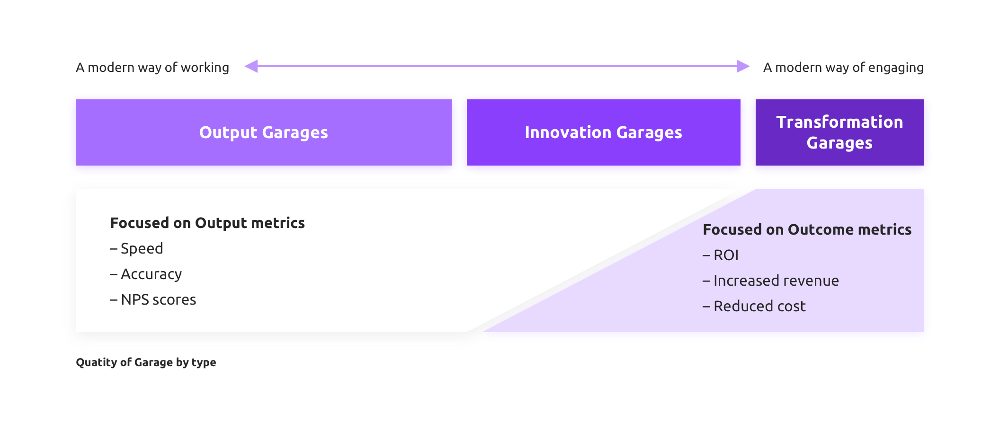
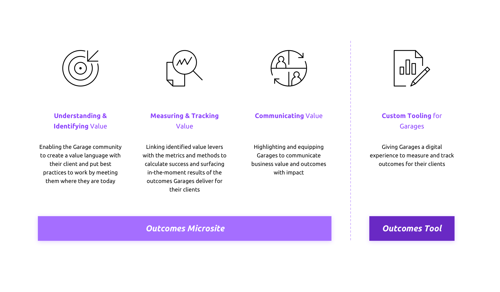

IBM Garage Outcomes
Drive real client outcomes with your IBM Garage by deeply understanding how to identify, measure, track, and communicate business value.
My Role
UX/UI Designer
Core Team
Designer x 1, Developer x 4, Architect x 1, PM x 1
Duration
4 months
My Responsibilities
- User research
- Wire-framing
- Usability testing
- UI design
Tools
Mural, Sketch, Invision, After Effects
Moving from outputs to outcomes
The client is not mature in defining KPI's, we had to bring them examples of what to measure.
Struggle navigating '5 why' conversations with Product Owners as they do not understand the end objective- want a framework to point to help navigate those conversations
Some 'innovation factories' and other Garage engagements identified KPIs that are fuzzier on business impact, but demonstrate other metrics of value to the client
Exposures to best practices are needed to show what to deliver:
- Frameworks, exercises, practices
- Visual communication of value to clients
- Examples of metrics to measure
Coaching and training are needed to show how and why to deliver:
- Establishing a value language with clients
- Moving beyond product-value metrics
- A clear focus on measurable business returns
- Garage-wide ROI roll up vs. Individual initiatives
Who is this for?
Garage leaders can come from any background.
Leadership is asking them to take on activities they may have limited exposure or limited training.
Strong coaching and constant exposure to value conversations- yielded team of business results- focused leaders.
Peers and colleagues are the number one reported source for where individuals go for advice and help about their Garage.
Best practices are coming from longer-term engagements with a focus on developing a value language with their clients at the forming stages of the Garage and with teams dedicated in linking value throughout.
Holistic framework to embrace Outcomes over Outputs
IBM Garage Outcomes consists of two parts: microsite is used to explain to Garage Leaders how to understand & identify, measure & track, and communicate value; outcomes tool is used to help Garage Leaders calculate key metrics that reflect value in a step-by-step manner that is easy to understand.
Outcomes Tool - Mapping
*Example:
There is a step in the process on 25% of interactions in which a CSR must contact a local delivery partner in order to achieve customer resolution this interaction takes the CSR on average 17 minutesThe team wants to explore a partner blockchain that would allow real-time visibility across the client's partner network - saving the CSR 16min